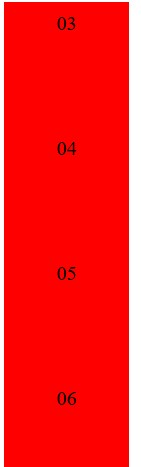
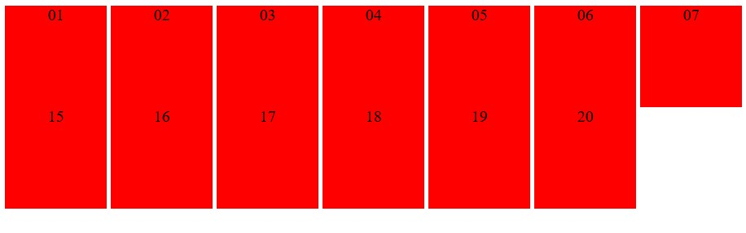

Unzip 'CSS deel 4 voorbeelden positionering.zip' en open 'voorbeeld1.html' in je browser. Open
de HTML en CSS bestanden in je editor.
Ga na wat het effect is van het veranderen van de display property voor .area naar
achtereenvolgens:
Bij een block staan ze verticaal in een box en in een nieuwe lijn
:

Bij inline staan ze horizontaal in een regel en hebben de groote van dat regel:
Bij inline-block staan ze horizontaal:

Voor welke waarden worden de opgegeven width en height genegeerd?
Voor de inline-Block en Block kan width en height aangepast worden. Voor inline is het niet mogelijk.